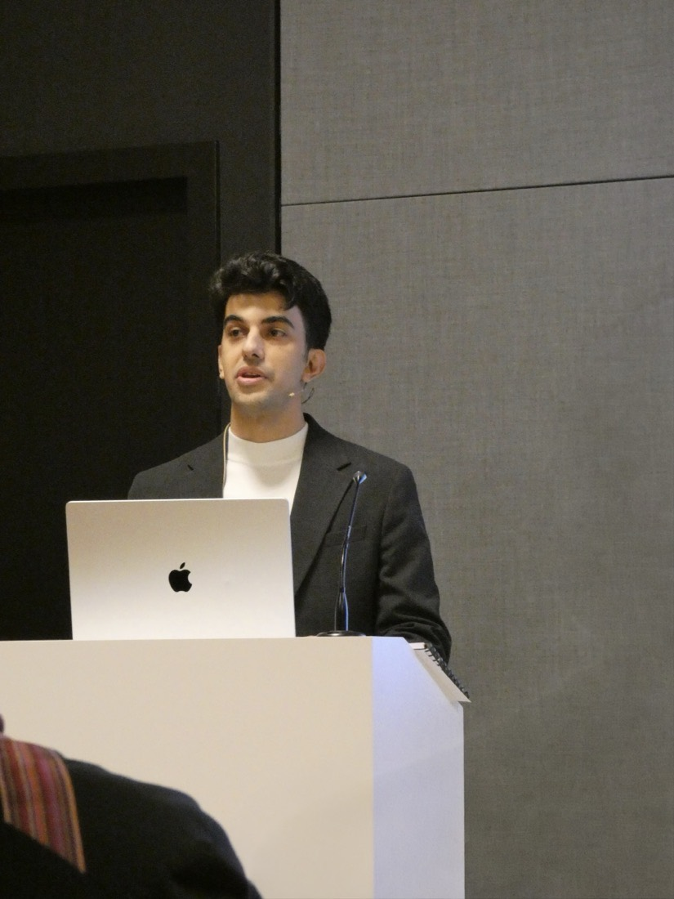

From systems engineering into health
I trained in Tehran, first an MBA in quality engineering and then an MSc in industrial engineering on socio-economic systems, so my picture of engineering came from logistics and industrial systems. From 2017 to 2019 I worked on Iran Post's parcel network, on a question that sounds simple: where should a national post put its sorting hubs? I built a simulation of the whole network and let a search run over it for a better layout. The best one came out 15% lower on projected transport cost, in the simulation, and it ended up as a decision support dashboard for the executives who had to choose. What I liked most was that last part: turning the analysis into something the people making the decision could actually use. I carried that preference with me into health research.
In 2020 I started a dual PhD in Belgium, in electrical engineering at KU Leuven and in biomedical sciences at Hasselt University. That meant a new country and a new field at the same time.
The USB stick
When I started, I imagined someone would hand me a dataset on a USB stick, and I would take it away and find something in it.
Instead, before I could choose any method, I had to find out what clinicians actually wanted to know, what the records could answer, and what the people responsible for those records would allow. It was almost two years before I worked with real world data. That was much slower, and much harder, than I expected.
In the middle
For a while my work sat between two groups, and neither was quite sure what to make of it. Some engineers told me it was not technical enough, and some clinicians and epidemiologists told me the opposite: too technical, and not methodological enough. I heard both.
On one study I might need a clinician, an engineer, a registry holder and a lawyer to agree, and each of them starts from a different question. A lot of my work is finding out what each one needs before they can say yes, and I have done that with registries and consortia in more than thirty countries.
Teaching

I taught in the Data Science in Healthcare course at Hasselt University for two academic years, and I have supervised seven master's theses in artificial intelligence at KU Leuven.
Where I am going
In 2026 I won a personal grant from the Flemish government, an Innovation Mandate, which is meant to carry research out of the university and into a company. It goes to one researcher and one company together, and mine is with Johnson & Johnson Innovative Medicine. I wrote the proposal and defended it.
The work is drug safety: comparing people who take one medicine with people who take another, on health records and insurance claims, in my case Optum's. When each site has only a few patients, that comparison is hard to keep fair. The question I am working on now grows out of my disability progression study: models that stay reliable when each site has few patients and the sites differ. Under all of it is one question: how much each site should learn together with the others, and how much on its own.
I don't know yet whether these methods hold up on claims data, outside multiple sclerosis. More on the mandate.
Outside work
Azeri is my mother tongue. I went to school in Persian, and learned Turkish and the Azerbaijani of Azerbaijan on the side. English came after that, and I am still working on Dutch.
I watch Formula 1 . If you ask me Verstappen or Hamilton, I will say Alonso and Räikkönen